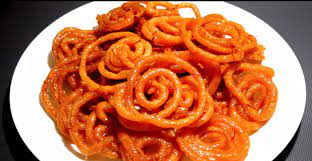

The South Asian variety is made by deep-frying maida flour batter in circular shapes, which are then soaked in sugar syrup.
Jalebi is eaten with curd or rabri (in North India) along with optional other flavours such as kewra (scented water).

Ingredients
- 3 cup all purpose flour
- 2 cup hung curd
- 1/2 cup ghee
- 3 cup sugar
- 5 strand saffron
- 1/2 teaspoon powdered green cardamom
- 1/2 cup corn flour
- 1 1/2 pinch baking soda
- 2 cup sunflower oil
- 3 cup water
- 4 drops rose essence
- 1/2 teaspoon edible food color
Method
- To make the sugar syrup, heat water in a pan over medium flame.
- Add sugar and mix until fully dissolved. Simmer the syrup until it attains one-string consistency.
- Add saffron, cardamom powder and rose essence.
- Stir well to prepare the final sugar syrup.
- This will be used to soak the jalebis and give them their signature sweetness.
- Now, heat oil in a pan over medium flame for deep frying.
- Fill the jalebi batter in a muslin cloth and pierce a small hole in the cloth.
- You can even use a squeezy bottle (ketchup bottles with a small nozzle on top) to make jalebis.
- Now just squeeze the muslin cloth to make concentric circles.
- Move from inside to outside to make perfect circles.
- Fry till jalebis from both the sides until they are crispy in texture and golden in colour.
- Soak the jalebis in sugar syrup for 3-4 minutes in warm sugar syrup.
- Ensure that the sugar syrup is warm and not very hot, as this will make the jalebis limp.
- Don't soak the jalebis for too long if you wish to retain their crispiness.
- Now, remove the jalebis from the syrup and place it on a tray lined with butter paper or foil.
- Decorate with silver foil (optional) and serve the jalebis hot, warm or at room temperature with creamy Rabri.
Tips
- The most important part of making Jalebi at home is to have the right consistency of your Jalebi batter.
It should not be too thin or thick. Make sure your batter is of flowing consistency
- Traditionally, the Jalebi batter is fermented for 10-12 hours in warmth.
But, if you live in a cold place, you must ferment it for 24 hours.
- While frying the Jalebis, make sure the flame is on low.
High heat will leave it uncooked from the inside. This will also give you ample time to give your Jalebis the best shape.
- For Instant Jalebis, mix together all-purpose flour, corn flour, and a little turmeric.
Then, add curd and water to it and whisk well in one direction to make a smooth batter.